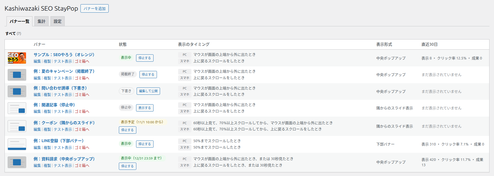
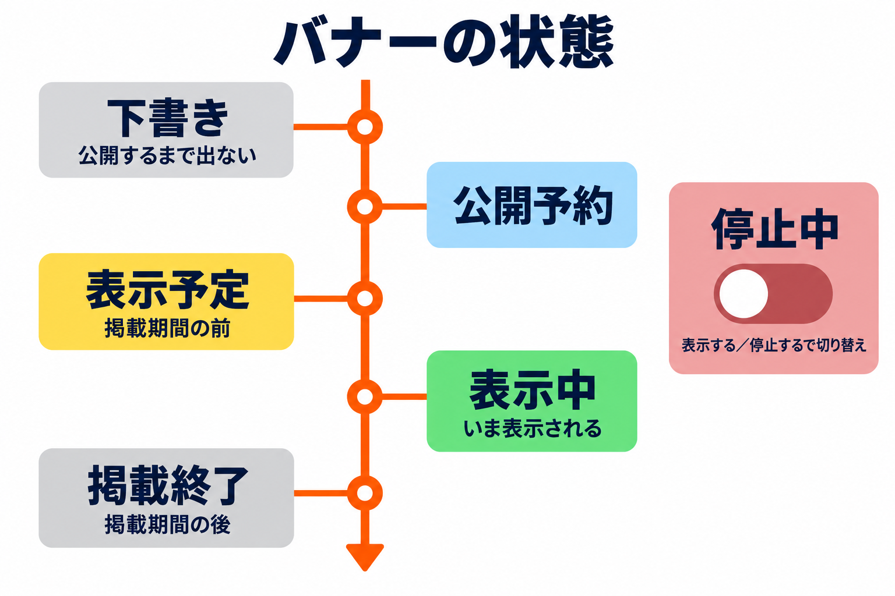
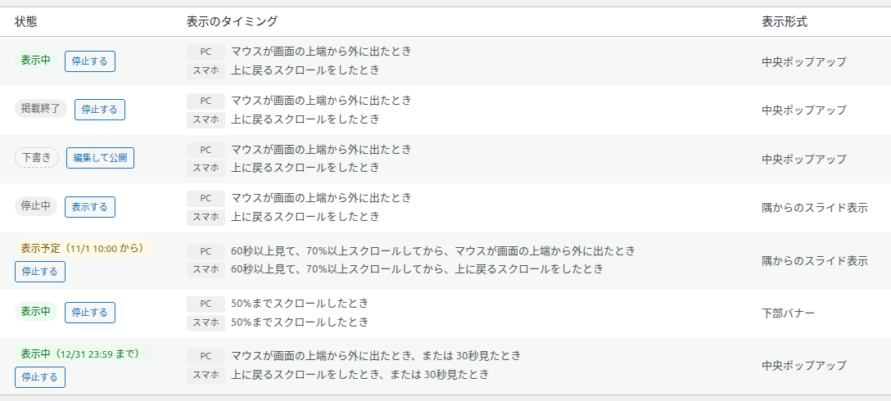
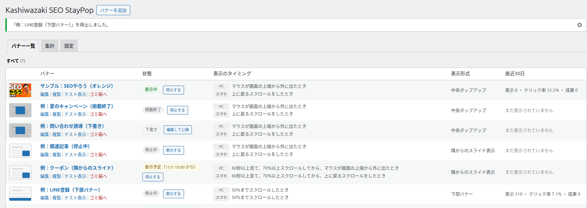
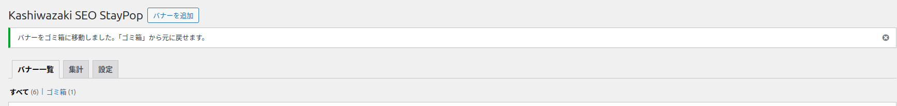
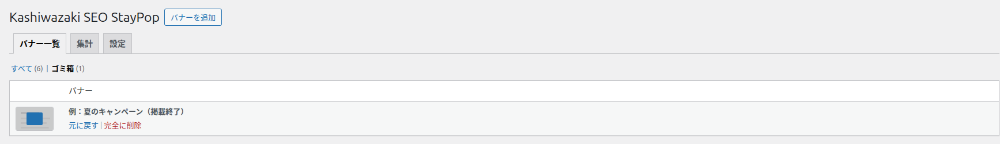

バナー一覧
作ったバナーを一覧で確かめ、表示の開始と停止・複製・テスト表示・ゴミ箱への移動を行う画面です。
左メニューの「Kashiwazaki SEO StayPop」を開くと、最初にこの画面が表示されます。各バナーの状態・表示のタイミング・表示形式・直近30日の結果を、1行ずつ確かめられます。

画面の地図
| 場所 | 表示・操作 | 内容 |
|---|---|---|
| 見出しの横 | バナーを追加 | 新しいバナーの編集画面を開きます。「バナー一覧」タブのときだけ表示されます。 |
| 見出しの下 | バナー一覧 / 集計 / 設定 | タブで画面を切り替えます。集計と設定は管理者だけに表示されます。 |
| 表の上 | すべて (件数) / ゴミ箱 (件数) | ふだんのバナーと、ゴミ箱のバナーの表示を切り替えます。「ゴミ箱」はゴミ箱に1件以上あるときだけ表示されます。 |
| 表 | 画像・バナー・状態・表示のタイミング・表示形式・直近30日 | 1行が1つのバナーです。新しく作ったものほど上に並びます。 |
表の列
| 列 | 内容 |
|---|---|
| （画像） | バナーに画像を設定していれば、その画像の縮小版が表示されます。画像がなければ、表示形式を表す小さな絵が表示されます。 |
| バナー | バナーの名前です。名前を付けていない場合は「（名前なし）」と表示されます。名前をクリックすると編集画面が開きます。下に行の操作（編集・複製・テスト表示・ゴミ箱へ）が並びます。 |
| 状態 | いまサイトに表示されるかどうかを表す札と、表示・停止を切り替えるボタンです（下の表を参照）。 |
| 表示のタイミング | PC とスマホのそれぞれで、どんなときに表示されるかを文章で表示します。その端末で使える条件がないときは「表示されません」と表示されます。 |
| 表示形式 | 中央ポップアップ・下部バナー・隅からのスライド表示のどれかです。 |
| 直近30日 | 管理者だけに表示されます。「表示 ○ ・ クリック率 ○% ・ 成果 ○」の形で、直近30日の結果を表示します。まだ一度も表示されていなければ「まだ表示されていません」と表示されます。 |
状態の札とボタン

| 札 | 意味 | 横のボタン |
|---|---|---|
| 表示中 | 公開中で、いま表示されます。掲載期間の終わりを決めていれば「表示中（月/日 時:分 まで）」と表示されます。 | 停止する |
| 表示予定（月/日 時:分 から） | 公開中ですが、掲載期間がまだ始まっていません。始まると自動で表示されます。 | 停止する |
| 掲載終了 | 公開中ですが、掲載期間が終わっています。表示されません。 | 停止する |
| 停止中 | 公開中ですが、「サイトに表示する」がオフです。表示されません。 | 表示する |
| 下書き | まだ公開していません。表示されません。 | 編集して公開 |
| 公開予約 | 公開する日時を予約しています。その日時になると公開されます。 | 編集して公開 |

| ボタン | 押すと |
|---|---|
| 停止する | そのバナーの「サイトに表示する」をオフにします。すぐに表示されなくなります。 |
| 表示する | そのバナーの「サイトに表示する」をオンにします。掲載期間の中なら、すぐに表示が始まります。 |
| 編集して公開 | 編集画面を開きます。公開は編集画面の「公開」ボタンで行います。 |

行の操作
バナーの名前の下に、次の操作が並びます。
| 操作 | 内容 | 取り消し |
|---|---|---|
| 編集 | 編集画面を開きます。 | - |
| 複製 | 同じ設定のバナーを「（元の名前） のコピー」という名前で作り、その編集画面を開きます。複製したバナーは下書き・停止中で作られるので、同じバナーが2つ表示されることはありません。 | 不要になったらゴミ箱へ移せます |
| テスト表示 | 新しいタブでサイトのトップページを開き、このバナーを試します（サイトでテスト表示）。 | - |
| ゴミ箱へ | バナーをゴミ箱に移します。確認は出ません。ゴミ箱に移したバナーは表示されなくなります。 | ゴミ箱から「元に戻す」で戻せます |

ゴミ箱
表の上の「ゴミ箱」をクリックすると、ゴミ箱のバナーだけが表示されます。ゴミ箱では、列は画像とバナーの名前だけになります。

| 操作 | 内容 |
|---|---|
| 元に戻す | ゴミ箱に移す前の状態（公開・下書きなど）に戻します。公開していたバナーは、戻したときに条件を満たしていれば、すぐに表示が始まります。 |
| 完全に削除 | 確認のメッセージ「このバナーを完全に削除します。元に戻せません。よろしいですか？」が表示され、「OK」を押すと削除します。元に戻せません。 |
バナーを完全に削除しても、そのバナーの集計のログは消えません。集計タブでは「削除したバナー #番号」として残ります。ログも消したい場合は、集計タブの「すべてのログを削除」を使います（すべてのバナーのログが消えます）。
この画面で出るメッセージ
| メッセージ | 意味 |
|---|---|
| 「（名前）」を表示する設定にしました。 | 「表示する」を押して、表示をオンにしました。 |
| 「（名前）」を停止しました。 | 「停止する」を押して、表示をオフにしました。 |
| バナーをゴミ箱に移動しました。「ゴミ箱」から元に戻せます。 | 「ゴミ箱へ」を押しました。 |
| バナーをゴミ箱から戻しました。 | ゴミ箱で「元に戻す」を押しました。 |
| バナーを完全に削除しました。 | ゴミ箱で「完全に削除」を押しました。 |
| バナーを ○ 件読み込みました（停止中）。内容を確かめてから「表示する」にしてください。 | 設定タブの「読み込む」でバナーを読み込みました（設定タブ）。 |
| まだバナーがありません。 | バナーが1つもありません。横の「最初のバナーを作る」で作り始められます。 |
| ゴミ箱は空です。 | ゴミ箱にバナーがありません。 |